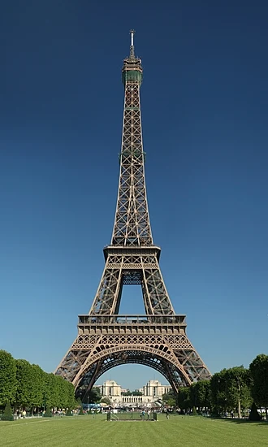

Paris is the capital and largest city of France, with an estimated city population of 2.04 million in an area of 105.4 km2 (40.7 sq mi), and a metropolitan population of 13.2 million as of January 2026. Located on the river Seine in the centre of the Île-de-France region, it is the largest metropolitan area and fourth-most populous city in the European Union (EU). Nicknamed the "City of Light", partly because of its role in the Age of Enlightenment, Paris has been one of the world's major centres of finance, diplomacy, commerce, culture, fashion, and gastronomy since the 17th century.[1] It's official Language is generally French.
Paris is one of the most visited cities in the world, receiving approximately 48 million tourists—including inbound and domestic visitors— in 2024, according to Statista. According to Reuters, France saw a record-breaking 102 million foreign tourists in 2025, with many visiting Paris. Tourists come to Paris for a variety of reasons, including landmarks, art, cuisine, politics, fashion, and sporting events, such as the French Open and the Tour de France. The city’s tourism industry contributes greatly to France’s annual tourism revenue. The city of Paris is supported by a well-established subway transportation system known as the Metro, a citywide bus system, and the Charles de Gaulle International Airport.[2]